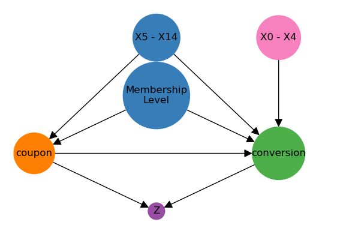
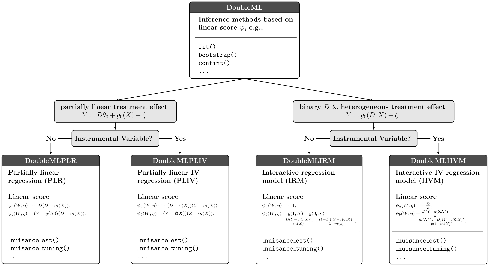

import numpy as np
import pandas as pd
import scipy.stats as stats
import doubleml as dmlHands-on Session 1: Uplift Modeling
Introduction
In this notebook, we will apply Double Machine Learning in a use case of uplift modeling. Due to the general goal of the course will consider a generated dataset. The data generating process is calibrated based on empirical examples and common simulations in research.
The goal is to mimic an observational dataset, which is derived from from a marketing campaign with the goal of increasing the conversion rate of a product.
Scenario
We consider a scenario with an online shop that wants to evaluate the effect of their email campaigns. They send regular emails to their newsletter subscribers, in which they offer a discount for a specific product. The goal is to increase the conversion rate of the product. So far, they always sent the same email to all subscribers, i.e., every subscriber receives a coupon. Now, they want to investigate if a new strategy could be more effective, i.e., by targeting the coupons towards specific subgroups of their subscribers. The rationale behind this is that some subcribers would have bought the product anyway, even without the discount. Hence, they evaluate their historical (non-experimental) sales data over the last months.
Lets start by importing the necessary packages.
Data
Load our dataset and examine all available features.
url = 'https://docs.doubleml.org/tutorial/stable/datasets/data/uplift_data.csv'
df = pd.read_csv(url)df.shapeThe dataset contains \(10,000\) observations and \(22\) variables. The variables are
conversion: the outcome of interest (binary)coupon: the treatment variable, whether the customer used a coupon (binary)X1-X14: A set of continuous features (numeric), measuring information on age, previous activities, time of last purchase, etc.membership_level: Dummy coded categorical feature for information on membership level (binary)Z: A score measuring customers’ activity 2 months after the campaign (numeric)ite: The individual treatment effect (numeric)
All continuous variables have been normalized before our analysis.
Of course, in a real-world application, we would not have the individual effect ite available. We will use it here to evaluate the performance of our model.
The goal is to estimate the effect of the treatment variable coupon on the the conversion probability. Note that in this setting, both treatment and outcome are binary variables.
As a first impression, let’s evaluate the difference in averages between the treatment and “control” group and compare it to the average treatment effect in the sample. You can use the ttest_ind from scipy.stats to test for the statistical significance of the difference in means.
# True average treatment effect
ATE = df['ite'].mean()
print(ATE)## TODO: Run significance test (as if data came from an experiment)Part I: Basic DoubleML
We will follow the basic steps of the DoubleML Workflow.
Step 0: Problem Formulation & DAG
As already mentioned, we are interested in estimating the effect of the treatment variable coupon on the the conversion probability. As the dataset is observational, we will have to decide which variables are confounders and what we have to control for.
Usually it is very helpful to visualize the problem in a causal graph or directed acyclic graph (DAG). The following graph shows the causal graph for our problem.

Step 1: Data-Backend
For the DoubleML-package, we have to prepare a specific DoubleMLData object. Please specify outcome variable, treatment variable, and covariates. The covariates should be a list of all variables that are used as confounders in the causal graph.
## TODO: Prepare DoubleMLData backend by specifying confounders, treatment variable and outcomeStep 2: Causal Model
Next, we have to decide which DoubleML Model is appropriate for our problem. Which of the models would you choose and why?

As we have a single binary treatment variable and a single binary outcome variable (without instrumental variables), we will use the DoubleMLIRM model.
Step 3: ML Methods
As the use of machine learning methods is at the core of the DoubleML approach, we have to choose different learners to fit the nuisance parts of our score function.
As a first step, take a look at the choosen model and the corresponding score function:
The score shows that we have to estimate two nuisance components
\[\begin{align*} g_0(X) &= \mathbb{E}[Y | X]\\ m_0(X) &= \mathbb{E}[D | X]. \end{align*}\]
As both conversion and coupon are binary variables, the conditional expectations are conditional probabilities. Consequently it is only natural to use classification methods to estimate the nuisance components.
As a basemodel for comparison, we will use a logistic regression model.
from sklearn.linear_model import LogisticRegression
ml_g_linear = LogisticRegression(penalty=None, solver='lbfgs', max_iter=1000)
ml_m_linear = LogisticRegression(penalty=None, solver='lbfgs', max_iter=1000)Define further learners for the nuisance components. Usual good choices are Random Forests (e.g. scikit learn) or Gradient Boosting Trees (e.g. lightgbm).
## TODO: Specify learners of your choiceStep 4 & 5: Initialize and estimate DoubleML Object
Now we can initialize the DoubleMLIRM object.
Add some hyperparameters such as
n_folds: number of folds for the cross-fittingn_rep: number of repetitions for the cross-fittingtrimming_threshold: trimming threshold for the propensity score
## TODO: Specify a DoubleML model objectStart the estimation procedure and take a look at the final estimates of your model.
## TODO: fit modelUse additional learners for the nuisance components and compare the results.
## TODO: Specify and fit models that you specified yourself## TODO: Summarize the estimation outputYou can evaluate the performance of the nuisance learners by looking e.g. at the logloss (see Part 7.1.4 documentation).
# TODO: Evaluate learners using log_loss or balanced_accuracy_score (or others)
from sklearn.metrics import log_loss, balanced_accuracy_score
def logloss(y_true, y_pred):
subset = np.logical_not(np.isnan(y_true))
return log_loss(y_true[subset], y_pred[subset])
# print(f'Linear nuisance functions:\n{dml_obj_linear.evaluate_learners(metric=logloss)}')Step 6: Inference
Update the confidence interval to a \(90\%\) confidence interval.
## TODO: Estimate 90% confidence intervalAdding additional control variables
Before, we controlled for all confounding variables. Next, repeat the analysis, but add the variables \(X1\) - \(X4\).
Take a look at your DAG. What would you expect of the performance of the model?
## TODO: Add additional controls and re-run analysis## TODO: Summarize your results so farNext, add the variable \(Z\). What is your expectation? Can you explain the results?
# TODO: Initialize data-backend and causal model that includes Z as a confounder# TODO: Fit your model and summarize againOverall summary of estimates
## TODO: Summarize your findings so farPart 2: Effect Heterogeneity
The idea of uplift modeling is based on treatment effect heterogeneity. Let us take a look at the heterogeneity of the treatment effect in our sample.
Average Treatment Effect on the Treated
As a first step to estimate heterogenous treatment effects, we will estimate the average treatment effect on the treated (ATTE).
## TODO: Estimate the ATTE by specifying "score='ATTE'" in the IRM modelThe true effect among the treated is the following:
# TODO: Compare your results to the true ATTE in the sample
ATTE = df[df['coupon'] == 1]['ite'].mean()
print(f'ATTE:\n{ATTE}')Group Average Treatment Effects
Let us only consider the boosting model with the additional control variables.
Next, consider treatment effect heterogeneity. We will start with group treatment effects. Consider the the effects for the different membership level groups.
# Comparison to true GATEs in the sample
for name in X_names_cat:
print(f"{name}: {df['ite'][df[name] == 1].mean()}")Try to use the gate() method to estimate the group specific treatment effects.
# TODO: Based on one of your previous models (with "score = 'ATE'"), estimate the GATE for membership levelsConditional Average Treatment Effects
To consider the heterogeneity in continuous variables, we can specify groups based on bins or consider projections on a dictionary of basis functions. To start we will explain the basic idea using the individual treatment effect ite.
The conditional average treatment effect (CATE), here conditionally on feature \(X_5\) (e.g. age), is defined as
\[ \tau(x) = \mathbb{E}[\underbrace{Y(1) - Y(0)}_{\text{individual effect}} | X_5 = x]. \]
Assuming, we know the individual treatment effect, a natural estimator for the CATE is a linear projection on some basis functions \(\phi(X_5)\). In the simplest case, we just consider the linear projection on \(X_5\) itself and an intercept.
Why should we include the intercept?
import statsmodels.api as sm
cate_var = 'X14'
phi_x = sm.add_constant(df[cate_var])
true_cate_linear = sm.OLS(df['ite'], phi_x).fit()
print(true_cate_linear.summary())To get a better grip on the idea, we will plot the CATE.
from matplotlib import pyplot as plt
plt.scatter(df[cate_var], df['ite'], alpha=0.3)
plt.scatter(df[cate_var], true_cate_linear.predict(phi_x), color='green')
plt.show()The feature \(X_5\) does not seem to have a heterogenous treatment effect. Try to estimate the CATE with the DoubleML package.
To predict the effect and the confidence interval you can use the confint() method.
# TODO: Estimate the CATE based on one of your DoubleML modelscate_confint_linear = cate_linear.confint(phi_x)
print(cate_confint_linear)plt.scatter(df[cate_var], true_cate_linear.predict(phi_x), color='green', s=0.5)
plt.scatter(df[cate_var], cate_confint_linear['effect'], color='red', s=0.5)
plt.scatter(df[cate_var], cate_confint_linear[ '2.5 %'], color='#FFC0CB', s=0.5)
plt.scatter(df[cate_var], cate_confint_linear[ '97.5 %'], color='#FFC0CB', s=0.5)
plt.show()To make the projection more complex, we can construct e.g. polynomial features of \(X_5\).
from sklearn.preprocessing import PolynomialFeatures
# Create the polynomial features object
poly = PolynomialFeatures(degree=3)
phi_x_values = poly.fit_transform(df[[cate_var]])
phi_x_polynomial = pd.DataFrame(phi_x_values, columns=poly.get_feature_names_out())
true_cate_polynomial = sm.OLS(df['ite'], phi_x_polynomial).fit()Now let us compare these values to the CATE results that we can obtain from our DoubleML object.
## TODO: Estimate the CATE and its confidence intervals for your DoubleML object# TODO: Visualize your CATE resultsPolicy Learning with Trees
Let us now try to improve the coupon assignment mechanism by using a policy tree.
# names of features for optimal policy
policy_vars = ['X' + str(i) for i in range(10, 15)] # X_names_cat
# features for optimal policy
policy_features = df[policy_vars].copy()# TODO: Fit a shallow policy tree # TODO: Plot the policy treeWe can compare the suggested treatment assignment to the initial allocation of the coupons. We will load and use a separate data set for the evaluation.
url_2 = 'https://docs.doubleml.org/tutorial/stable/datasets/data/uplift_data_policy.csv'
df_policy = pd.read_csv(url)# TODO: Use the predict method to obtain an optimal policy assignment rule# TODO: Estimate the ATTE for the policy data set as baseline comparison.
# Hint: You can estimate the ATTE without re-estimation by just
# using the treatment variable as the variable for the GATECan we improve upon the observed treatment assignment mechanism (in terms of the ATTE?)
# TODO: Compare the ATTE and the optimal policy ATTE.